Inhalt Index DeskTop Bronstein

 Dynamische Systeme und Chaos Gewöhnliche Differentialgleichungen und Abbildungen Qualitative Theorie gewöhnlicher Differentialgleichungen Stabilitätstheorie
Dynamische Systeme und Chaos Gewöhnliche Differentialgleichungen und Abbildungen Qualitative Theorie gewöhnlicher Differentialgleichungen Stabilitätstheorie


Hat der periodische Orbit  von (17.1) außer 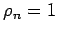 keinen weiteren Multiplikator auf dem komplexen Einheitskreis, so heißt
von (17.1) außer 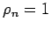 keinen weiteren Multiplikator auf dem komplexen Einheitskreis, so heißt  hyperbolisch. Der hyperbolische periodische Orbit heißt vom Typ
hyperbolisch. Der hyperbolische periodische Orbit heißt vom Typ  , wenn m Multiplikatoren innerhalb und k =n-1 Multiplikatoren außerhalb des Einheitskreises liegen. Ist m > 0 und 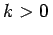, so heißt der periodische Orbit vom Typ (m, k) sattelartig.
, wenn m Multiplikatoren innerhalb und k =n-1 Multiplikatoren außerhalb des Einheitskreises liegen. Ist m > 0 und 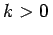, so heißt der periodische Orbit vom Typ (m, k) sattelartig.
Nach einem Satz von ANDRONOV und WITT ist ein hyperbolischer periodischer Orbit  von (17.1) vom Typ (n-1, 0) asymptotisch stabil. Hyperbolische periodische Orbits vom Typ (m, k) mit k >0 sind instabil.
von (17.1) vom Typ (n-1, 0) asymptotisch stabil. Hyperbolische periodische Orbits vom Typ (m, k) mit k >0 sind instabil.
| Beispiel A |
|
Ein periodischer Orbit 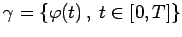 in der Ebene mit den Multiplikatoren 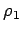 und 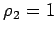 ist asymptotisch stabil, wenn 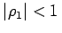, d.h. wenn 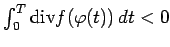 ist. |
Liegt außer noch ein weiterer Multiplikator auf dem komplexen Einheitskreis, so ist der Satz von ANDRONOV-WITT nicht anwendbar. Zur Stabilitätsanalyse des periodischen Orbits reichen die Informationen über die Multiplikatoren nicht aus.
| Beispiel B |
|
Als Beispiel sei das ebene System 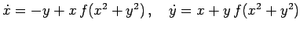 mit der glatten Funktion 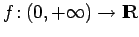 gegeben, die zusätzlich den Eigenschaften f(1) = f'(1)=0 und f(r)(r-1) < 0 für alle 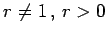, genügt. Offenbar ist 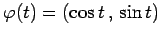 eine 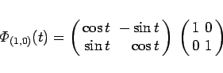
|